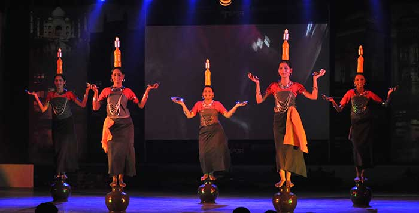

Exploring India's Culture and Heritage
Classical Dance Forms of India
Garia Dance is a traditional folk dance performed by the Tripuri tribe of Tripura, a northeastern state of India. It is deeply rooted in the tribal culture and beliefs of the region. The dance is associated with the Garia Puja, a spring festival celebrated to honor Garia, the deity of livestock, farming, and prosperity. The festival usually takes place in April, at the beginning of the agricultural season.
The dance is performed by young boys and girls, who move in rhythmic steps to the beat of traditional instruments like the khamb (drum) and flute. The dancers often wear colorful tribal attire, and the movements are lively and joyful, reflecting the festive mood of the season. The dance is performed in groups, and the community participates by singing and clapping.
The Garia Dance comes from the Tripuri tribe of Tripura, a state in Northeast India. It is closely linked to the Garia Festival, which is held in April to worship Garia, the god of crops, animals, and prosperity. This dance has been performed for generations as a prayer for a good harvest, rain, and peace.
The Garia Dance has been passed down through oral tradition and continues to be a vibrant part of Tripura’s cultural identity. While it was once performed only in villages during rituals, it is now also showcased at cultural festivals and events to promote tribal heritage. Despite modernization, the dance remains a symbol of community unity, tradition, and respect for nature.
Historically, the Garia Dance was performed to seek blessings for a good harvest, rain, and general well-being of the community. As farming was the main livelihood of the tribal people, this dance was both a spiritual and social activity. The celebration marked the end of the sowing season and expressed gratitude to nature and the gods.